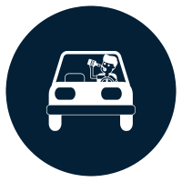

Eine Alkohol-MPU wird in folgenden Fällen angeordnet
Warum wird eine Alkohol-MPU angeordnet?
Wiederholtes Fahren unter Alkoholeinfluss
Hoher Blutalkoholspiegel (ab 1,6 Promille)

Führerscheinentzug bei Trunkenheit am Steuer
Schwere alkoholbedingte Verkehrsdelikte
In diesen Fällen verlangt die Führerscheinbehörde eine MPU, um sicherzustellen, dass Sie künftig verantwortungsbewusst im Straßenverkehr fahren und keine Gefahr für sich selbst oder andere Verkehrsteilnehmer darstellen.
Hinweis: Das Fahren unter Alkoholeinfluss mit einem Blutalkoholwert zwischen 1,1 und 1,6 liegt im Ermessen der Führerscheinbehörde. Das bedeutet, dass die Entscheidung, ob eine MPU angeordnet wird, von verschiedenen Faktoren wie der Beeinträchtigung abhängt.